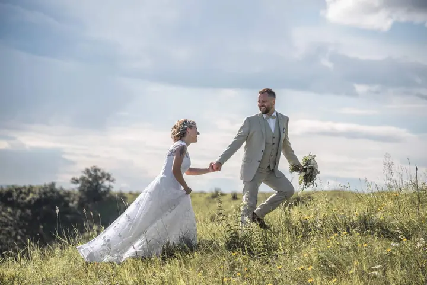
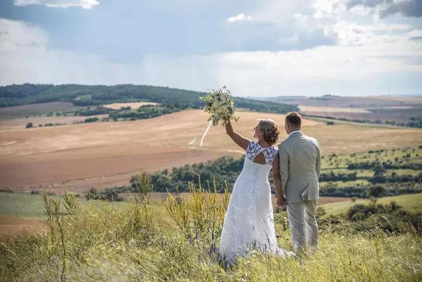
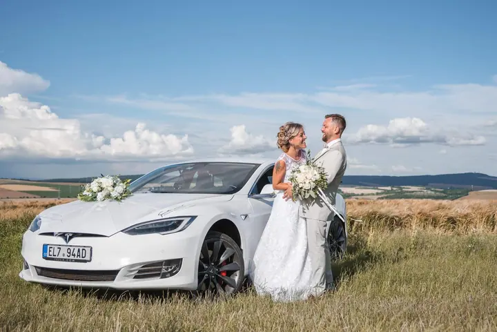

jedna
Svatební fotografie
Fotím obřad, gratulace i chvíle s vašimi nejbližšími. Pak spolu vyrazíme do krajiny na portréty, kde máte prostor jen pro sebe.


Jmenuji se Vojtěch Svoboda, jsem grafik a fotograf a nejradši fotím svatby a páry venku v krajině. Kromě toho fotím portréty, auta a záběry z dronu a ze svatby vám můžu natočit i video.
Více o mně
Co dělám
jedna
Fotím obřad, gratulace i chvíle s vašimi nejbližšími. Pak spolu vyrazíme do krajiny na portréty, kde máte prostor jen pro sebe.
dvě
Ze svatby vám můžu natočit i video. Fotky a film tak máte od jednoho člověka, který zná celý průběh vašeho dne.
tři
Fotím vás ve dvou i samotné. Nejradši venku v trávě, v poli a pod velkým nebem, kde se můžete volně pohybovat.
Fotím auta a záběry z dronu. Hodí se na svatbu, kde hraje roli i vůz, nebo jako samostatná zakázka.

Fotografie, které vypráví příběh za vás


Za objektivem
Fotím a zároveň se věnuji grafice. Navrhuji weby, loga, vizuální identity, bannery i tiskoviny. Díky tomu na fotku vždycky koukám i očima grafika a hlídám si kompozici, světlo a celkový dojem.
Na svatbách mě nejvíc baví chvíle, kdy spolu vyrazíme ven. Louky, kopce a pole s velkým nebem nad hlavou dávají páru prostor se uvolnit, chytit se za ruce a jen tak se projít.
Chci, aby z fotek bylo cítit, jaký váš den doopravdy byl. Napište mi, ozvu se vám co nejdřív a domluvíme se, co si od focení představujete.
Vojtěch
Napište mi přes formulář nebo zavolejte. Ozvu se vám co nejdřív a ověříme, jestli mám váš termín volný.
Projdeme spolu průběh dne, místa a vaše přání. Domluvíme se i na tom, jestli chcete kromě fotek také video.
Fotím obřad, gratulace i hosty. Pak si vás na chvíli ukradnu do krajiny na společné portréty.
Fotky vyberu a upravím. Hotovou galerii vám pošlu, jakmile bude připravená.
Portfolio
Fotografie jsou ilustrační
Otázky
Ano, kromě fotografií nabízím i svatební video. Stačí to zmínit v poptávce a domluvíme rozsah.
Na webu uvádím hodinovou sazbu 800 Kč. Cenu za svatbu vám spočítám podle toho, jak dlouho a co všechno budu fotit. Nejsem plátce DPH.
Ano, fotím i z dronu. Záběry shora se hodí třeba na místo obřadu nebo na skupinovou fotku všech hostů.
Jsem i grafik a navrhuji mimo jiné tiskoviny. Pokud chcete, domluvíme se i na grafice ke svatbě.